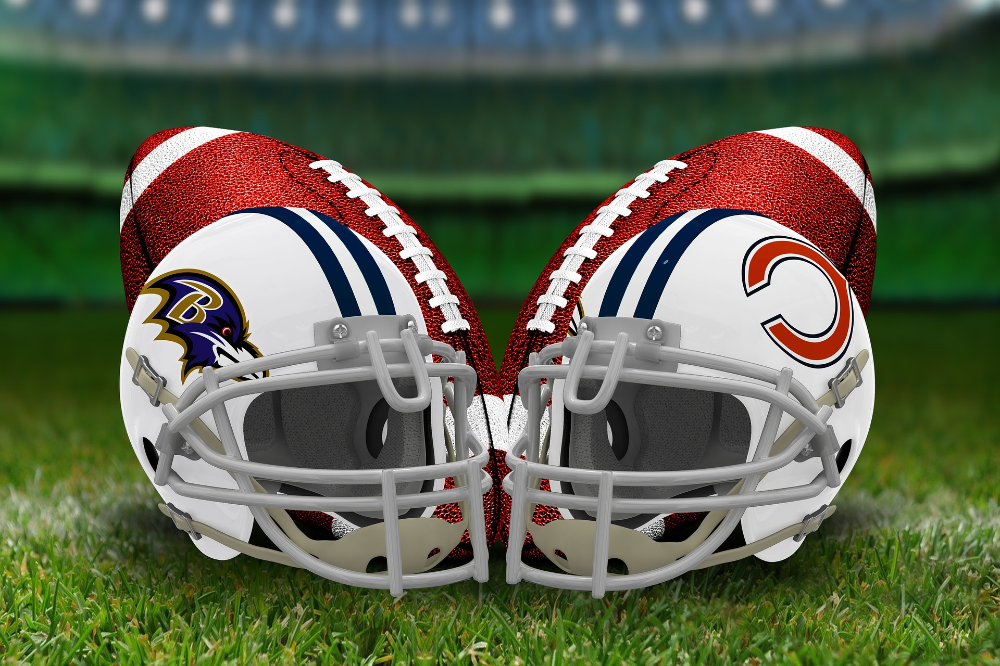
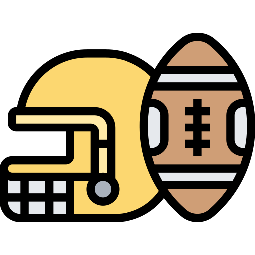
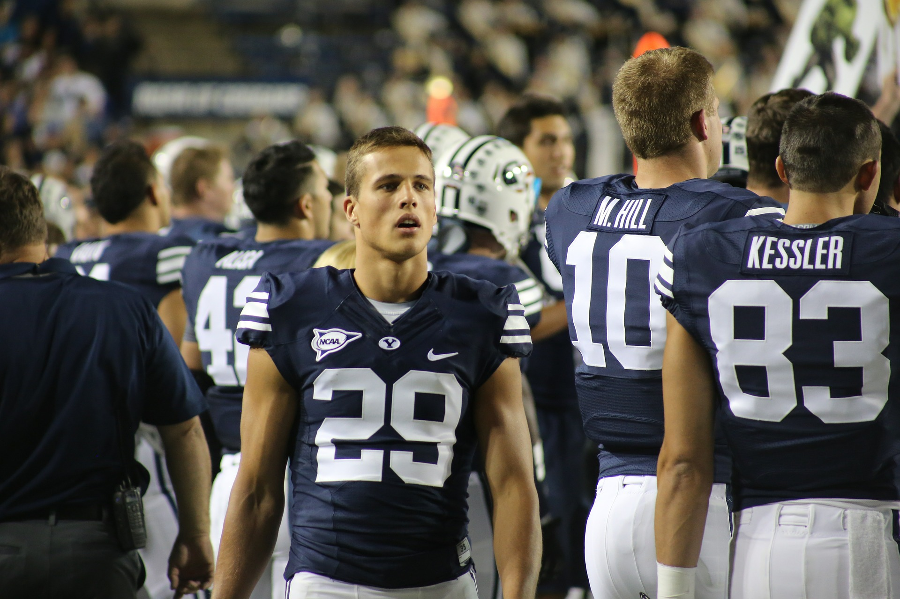

Kansas City parece ser el primero en la lista porque Patrick Mahomes firmó por 10 años con los Chiefs.
Le dieron el contrato más lucrativo en la historia del deporte.
No solo aseguraron a una de las estrellas de la NFL, sino que abrieron su cartera como si su vida dependiera de ello. Su contrato es por 10 temporadas más las 2 que le quedan en su actual acuerdo y le pagaron 500 millones de dólares, más que cualquier otro deportista en el mundo.
Mahomes lleva 2 años siendo el QB titular de Kansas City y en ambas temporadas sorprendió. Primero fue el MVP de la NFL en 2018 y solo un año después, llevó a los Chiefs al Super Bowl y rompió una racha de 50 años sin poder ganarlo, además fue el ‘Jugador Más Valioso’ del partido
kansas city
Los Chiefs van a ser contendientes mientras Mahomes esté en Kansas City. Tienen su máxima oportunidad de título este 2020, no solo porque son los campeones defensores, sino porque el QB está en su cuarto año de contrato de novato. El quinto, en 2021, sube el precio de $5.3 millones a $24.8, y eso es antes de que entre la renovación histórica que le pagará unos $45 millones por año a partir de 2022.
Mejores equipos de la historia
24/11/21
Green Bay 1996
Rams 1999
Steelers 1975
49ers 1994
Redskins 1991
dolphins 1972
49ers 1989
Packers 1962
49ers 1984
Bears 1985
Esta es una lista de los 10 mejores equipos en ña historia de la NFL, ya que so los equipos que han tenido los mejores records y son los equipos mas dominantes de la historia
El mejor Equipo
24/11/21
Ranking de equipos (2020)
En este video nos explican cuales son los 10 mejores equipos de la historia de la nfl basados en sus records ganadores
Ser, en una temporada, el último lugar de la división y al año siguiente el primer lugar, es una posibilidad que sucede recurrentemente en la NFL. Del 2003 al 2017 al menos se ha registrado un caso por campaña, en total son 22. Los más recientes son Jacksonville y Philadelphia.

cascos.
Ocupar las últimas posiciones le permite a los equipos perdedores tomar las primeras selecciones del draft. Por ejemplo, Jaguares de Jacksonville ocupó los últimos sitios de la División Sur de la Conferencia americana en la campaña 2016-17 y la temporada anterior fueron los primeros y tomando las primeras selecciones fueron armando a un equipo competitivo.
Fueron seis temporadas consecutivas con 10 derrotas o más por parte de los Jaguares y se convirtió en el quinto equipo en la historia de la NFL en registrar esa marca negativa. Una quinta parte de la plantilla de Jacksonville en la temporada pasada se caracterizó por ser novatos. El año pasado logró ubicarse en la primera posición de la división Sur en la Conferencia Americana tras ganar 62% de los encuentros.
Ocupar las últimas posiciones le permitió tener las primeras selecciones del draft del 2008 al 2017. De los jugadores que seleccionaron en la primera ronda se mantienen en la plantilla: Justin Blackmon (2012), Blake Bortles (2014), Dante Fowler (2015), Jalen Ramsey (2016) y Leonard Fournette (2017).
“Un equipo que tuvo una mala temporada previa recibe tratamiento preferencial, por estatuto de la NFL, tanto en el draft, como en el reclamo de veteranos que han sido descartados por otros equipos, todo en aras de promover la igualdad entre franquicias de la NFL. Aun con estas ventajas es difícil dar el salto de peor a mejor”, mencionó Álvaro Martín, comentarista para la cadena deportiva ESPN.
semana 10
12/05/22
indumentaria
Durante su etapa como los Texans, el logo consistía en el mapa de Texas en blanco con una estrella amarilla que marcaba la ubicación de la ciudad de Dallas,11 a la vez que el exterior era rojo. Originalmente, el fundador Lamar Hunt eligió el azul Columbia y el naranja para los uniformes, pero Bud Adams escogió ambos para su franquicia Houston Oilers. Por ello, Hunt optó por el rojo y el dorado, que incluso después de la marcha a Kansas City, siguen siendo sus colores.12 El logo, que también empleaban en el casco, fue reemplazado en 1963 por un diseño originalmente esbozado por Hunt en una servilleta, que todavía utilizan y consiste en las letras «KC» entrelazadas y superpuestas dentro de una punta de flecha blanca.12 Antes de su temporada inaugural, el escudo secundario de los Texans era un pistolero vestido con espuelas y con un sombrero vaquero, que además tenía una pelota en la mano izquierda.12 Luego del traslado a Kansas City, se cambió el personaje por un nativo con un balón en una mano y un hacha de guerra en la otra, así como con un gran pelo rubio y un calzado y taparrabos rojos, este último con las nuevas iniciales escritas en amarillo, con el mapa de Misuri detrás en color blanco.13 Este se usó hasta 1971, cuando adoptaron el mismo que tenían en el casco, objeto que pasó de ser gris a blanco en 1974.11

un equipo
Por otro lado, la indumentaria de los Chiefs se ha mantenido esencialmente igual a lo largo de la historia del club.1114 Consiste en un casco rojo y camisetas rojas o blancas con los números y nombres de colores opuestos, aunque se usaron pantalones blancos con ambas versiones de manera consecutiva en los periodos 1960-67 y 1989-99, siendo recuperada esta combinación en las últimas temporadas.15 A su vez, la mezcla de la camiseta blanca y el pantalón rojo no se utilizó en la etapas nombradas anteriormente.15
De igual manera, en varias ocasiones han usado indumentarias especiales con el objetivo de rendir homenaje o por casos específicos.16 Un ejemplo de ello es cuando vistieron de blanco para un par de partidos como visitantes a finales de 2006, con el fin de honrar al recién fallecido Hunt,17 a la par que en tres encuentros de la campaña 2009 jugaron con los uniformes de 1962, como también hicieron otros con motivo del cincuenta aniversario de la American Football League (AFL).18 En 2007 incluyeron de forma permanente en su camiseta un parche en memoria de Hunt y la AFL,19 que consiste en la insignia de la liga extinta y las iniciales del fundador de los Chiefs en el centro del balón.16 Nike es el proveedor oficial de los uniformes para todos los equipos de la NFL desde 2012.2021
 El mejor Equipo
El mejor Equipo